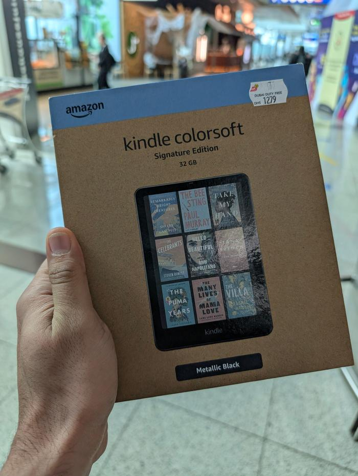
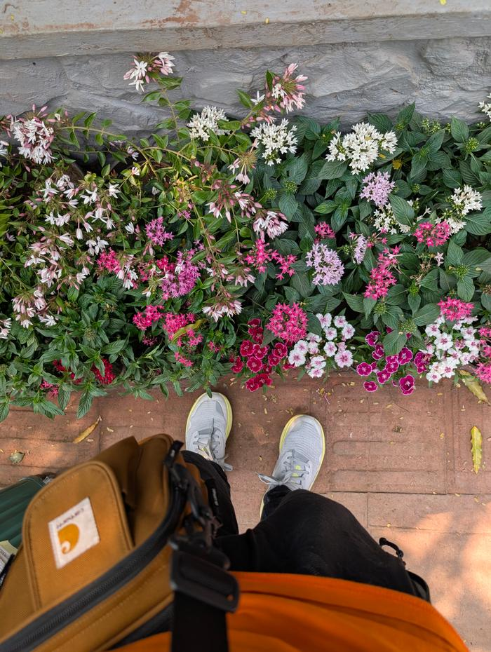
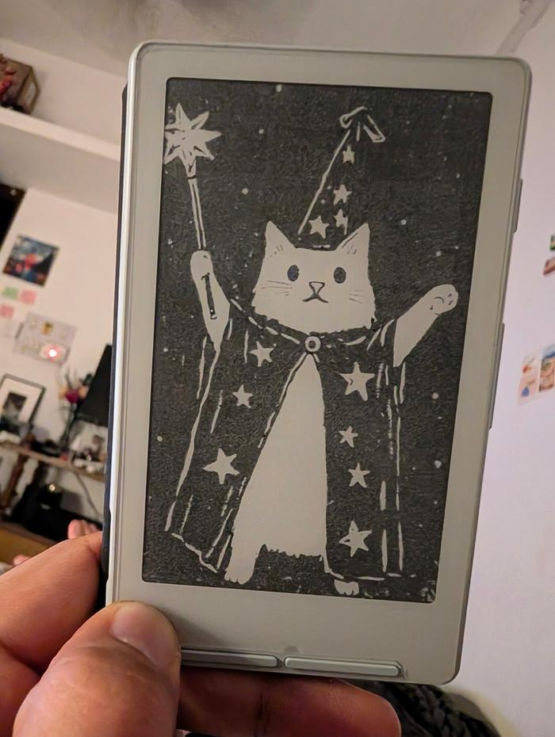

Varun Agarwal.
i made a digital diary of things i found fun. browse around and see!

Books
Reading log
Recent reads, roughly newest first — plus a few highlights pulled from the wider GoodReads library.

Wander
Photos & travel
Street art, temples, and gig photos from wherever I end up — London, Khajuraho, concerts.

Notes
Writeups
Gadgets, projects, and whatever else doesn't fit the other two.